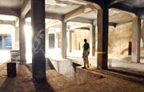
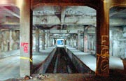
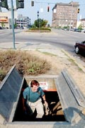

Monday, July 29, 2002
Abandoned subway could save
light rail plan
Tunnels in right spots and still usable,
planners say
By James Pilcher jpilcher@enquirer.com
The Cincinnati Enquirer
The musty smell and graffiti are definitely there, as is the long-standing reputation as one of the city's biggest embarrassments. But that's not what transportation planners see when they look at the 80-year-old subway tunnels underneath Central Parkway.

Engineering techician John Luginbill looks over the unfinished subway station beneath Central Parkway at Race Street.
(Glenn Hartong photos)
| ZOOM |
|

| ZOOM |
|
In fact, the 2.2 miles of concrete tubes - never used for the purpose for which they were designed - could eventually become the savior of the effort to bring light rail to the region.
They not only enable officials to easily connect the east side to the west side of the proposed system (thereby allowing a pitch for a countywide plan instead of just a line along Interstate 71), but they could be worth hundreds of millions of dollars in savings if the project is ever approved.
“That investment that the city initially made could be worth 40-50 times that now, and I would imagine people would take that,” says Paul Jablonski, chief executive officer and general manager of Metro. “They're there, so why not use them?”
Metro has proposed the new $2.6 billion light-rail system for all of Hamilton County and could put a new tax levy on the November ballot to pay for it.
History lesson
The tunnels were originally built in the early 1920s as part of a plan that would have brought a 16-mile transit system to Hamilton County. The original proposal, passed by voters in 1916 who approved a $6.1 million bond issue, called for a loop from downtown to the west along what is now Interstate 75 and then across what is now the path of the Norwood lateral and back into Cincinnati along what is now Interstate 71.

Luginbill climbs out of the subway through an access door in the median of Central Parkway.
(Glenn Hartong photo)
| ZOOM |
|
Cincinnati historian Dan Hurley says the Norwood lateral was built where it is now because much of the right of way had already been bought for the previous transit system.
He also says the idea of underground train was originally pitched to the public in an illustration in 1884 in a local newspaper, The Cincinnati Graphic.
That plan called for the removal of the canals that had become health hazards.
Eventually, the entire process fell prey to corrupt Cincinnati politics.
“After World War I, costs eventually doubled, but that didn't stop the political machine 1/2ndash 3/4 they had a pot of money to spend, and they would spend it by giving contracts to their friends and family,” says Mr. Hurley, president of Clifton-based Applied History Associates.
“They built about a third of it, but then the money ran out. And the idea was that they would tie into other interurban rail systems throughout the system, but five of those went bankrupt.”
Construction began in the early 1920s and stopped in 1924.
(File photo)
| ZOOM |
| Construction stopped in 1924, and a 1927 report said the cost to complete the project would be $10.6 million.
“By then, the Depression hit, and cars became popular, and then we had World War II,” Mr. Hurley says. “But that report pretty much put the nail in the coffin.”
The bonds were not paid off until 1966 and cost the city an additional $6.9 million in interest.
Parts of the tunnels were later used as Cold War bomb shelters, and one report from the 1950s states that some youths were sneaking into the structures from the nearby YMCA to smoke and drink.
Resurrected
Officials in charge of putting the new regional rail plan together immediately thought of the existing tunnels when designing the new system several years ago. They say the double tubes are strategically located, starting at Walnut Street and running north under Central Parkway until just short of Straight Street.
They also say that in addition to being wide and high enough to fit modern light rail cars, the tunnels are structurally sound 1/2ndash 3/4 the city has been maintaining the tunnels as functioning bridges since they support traffic on Central Parkway.
The city actually renovated several key portions of the tunnels throughout the 1990s, fixing several areas that had been deteriorating.
“They are basically concrete boxes, and they built them in the same way we would build them now,” says Fred Craig, vice president for Ohio for engineering firm Parsons Brinckerhoff, which prepared the regional rail plan for Metro and the Ohio-Kentucky-Indiana Regional Council of Governments. “We might as well take advantage and build within them and keep the disruption to the surface traffic to a minimum.”
A recent visit to what would have been a station at Central Parkway and Race Street finds that the concrete is indeed in good shape, and the oak ties laid down for what would have been rail tracks have not even rotted.
Mr. Craig said the water main that was laid in the northern tunnel (there are two tunnels) was made redundant when another such main was installed in the transit center during the Fort Washington Way construction, adding that the older water line could be easily moved.
“This one also worked out in terms of position,” Mr. Craig said. “A lot of times, you want to use existing infrastructure, but it's in the wrong place. But the fact is that these were in the right place, and they are of sufficient quality that we can use them.”
Money saver?
Officials say the tunnels could also serve another key purpose - bringing down the bottom line.
Under the current federal funding program, the worth of any existing local infrastructure counts toward a local community's contribution to a proposed project.
Mr. Jablonski says local officials have yet to come up with an estimate for the existing tunnels. But Mr. Craig says the going price for a new tunnel, with just one tube, is about $1,000 a foot. In addition, stations go for about $30 million to $40 million, and the existing structures include the makings of at least three stations.
That could make Cincinnati's dual-tube structures worth more than $100 million, although Mr. Craig says that figure could be higher when the final tallying is done.
“If we could get just $100 million out of it, that would be the local match for the entire west line, which we expect to cost $400 million,” Mr. Jablonski says. “For an initial investment of under $13 million, that would be a trade I'd be willing to make.”
Playing politics
And then there's the remaining role the tunnels could fill. When Metro officials unveiled MetroMoves, the 30-year plan that calls for the light-rail system and revamped and improved bus service, they touted it as something for the entire region.
Without the tunnels, the west lines would not be able to connect cheaply to the rest of the system, and transit officials acknowledge they would be pushing a system to Hamilton County that would serve only the east side.
“We want everyone to realize that this plan has something for everyone, and without those tunnels, that might not have been possible,” says Mr. Jablonski, whose first incarnation of MetroMoves was criticized last year because it contained a light rail line only along I-71. The new plan contains lines throughout the county, including an east/west line that runs between Dent and Eastgate and one that runs from Dent to downtown, both of which would use the tunnels.
Local political analyst Gene Beaupre says that move alone could eventually save the effort.
“It would have been political suicide to try and pitch a new tax to the entire county for something that only the east side will use,” says Mr. Beaupre, who teaches urban administration and campaign politics at Xavier University.
Mr. Craig says the fact that the tunnels could eventually be used for an actual rapid transit system “is a sign that the guys who designed and built these things over 100 years ago really knew what they were doing.
“Sure, we can look at the fact that it never got finished, but we'd rather look at the positives out of what we can get out of it. And we can get a lot.”
Metro: Plan getting positive feedback
 Abandoned subway could save light rail plan Abandoned subway could save light rail plan
Professor's slaying has neighbors in shock
Ex-officer on trial for mall rape, kidnapping
Small towns making comeback on Main Street
State fair expands music range
States tackle elusive spam
Newborn's death spurs 'haven' alert
Too-large elephant dies during birth
Local Digest
Showier Norwood police cruisers could replace fleet
You Asked For It
Congrats
Good News: Church's $2,600 gets good returns
Lakota has vision for athletics
Award-winning volunteer has hugs for all
Carrollton bus crash spurs mother's candidacy
Rural, urban shootings different
| 
{kind=link}
{kind=link}
{kind=link}
{kind=link}
{kind=link}
{kind=link}
{kind=link}
{kind=link}